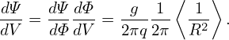

Noting that ∇q ×∇ψ = 0, the magnetic ï¬eld in Eq. (262) can be further written
|
| (292) |
This motivates us to deï¬ne a new coordinate α by
 | (293) |
to replace ζ, then the magnetic ï¬eld in Eq. (292) is written
 | (294) |
which is called the Clebsch form. Equation (294) implies that
 | (295) |
and
 | (296) |
which indicates that both α and ψ are constant along a magnetic ï¬eld line. Taking scalar product of Eq. (294) with ∇ğœƒ, we obtain
 | (297) |
which is nonzero, i.e., only 𜃠among (ψ,𝜃,α) is changing along a magnetic ï¬eld line. (Here 𝒥 = (∇ψ ×∇𜃠⋅∇α)−1 is the Jacobian of the coordinate system (ψ,𝜃,α), which happens to be equal to the Jacobian of (ψ,𝜃,ζ) coordinates.) Due to this fact, (ψ,𝜃,α) coordinates are usually called “ï¬eld-line-following coordinates†or “ï¬eld-aligned coordinates†[2, 6].
Using Eq. (294), the magnetic differential operator B ⋅∇ in the new coordinate system (ψ,𝜃,α) is written
|
| (298) |
which is just a partial derivative over 𜃠and this is expected since only 𜃠is changing along a magnetic ï¬eld line.
It is widely accepted (but can still be questioned because of lacking of conclusive experiments) that turbulence in tokamak plasmas usually has k∥≪ k⊥, where k∥ and k⊥ are the parallel and perpendicular wavenumbers, respectively. Due to this elongated structure along the parallel direction, less grids can be used in the parallel direction than that in the perpendicular direction in turbulence simulation. In this case, the ï¬eld-aligned coordinates (ψ,𝜃,α) provide suitable coordinates to be used, where less grids can be used for 𜃠coordinate in simulations and even some ∂∕∂𜃠derivatives can be neglected (high-n approximation), which simpliï¬es the equations that need to be solved. However, this is not the most important reason why almost all gyrokinetic codes use ï¬eld-aligned coordinates. The most important advantage of using ï¬eld-aligned coordinates is that the  stability of numerical algorthims is improved when we use coarse grids in the parallel direction because the parallel Courant condition (for explicit schemes) Δt ≤ ΔL∥∕v∥ can be more easily satisï¬ed (especially for the cases with kinetic electrons), where ΔL∥ is the parallel grid spacing, which is larger when coarse grids are used in the parallel direction. This is also mentioned in Ref. [20] and it seems to be right from my experiences of testing several algorithm but a strict test is needed to verify this. This can also be understood in the following way: the coarse parallel grid automatically ï¬lters out physically irrelevant but numerically problematic high-k∥ modes, permitting much longer time steps for explicit time stepping, in both particle and fluid codes[12].
Using Eq. (256), the deï¬nition of α in Eq. (293) can be written as
where  = B ⋅∇ϕ∕B ⋅∇𜃠is the local safety factor. For later use, deï¬ne δ = ∫ 𝜃ref𜃠d𝜃, then
α = ϕ −δ.
d𝜃, then
α = ϕ −δ.
Â